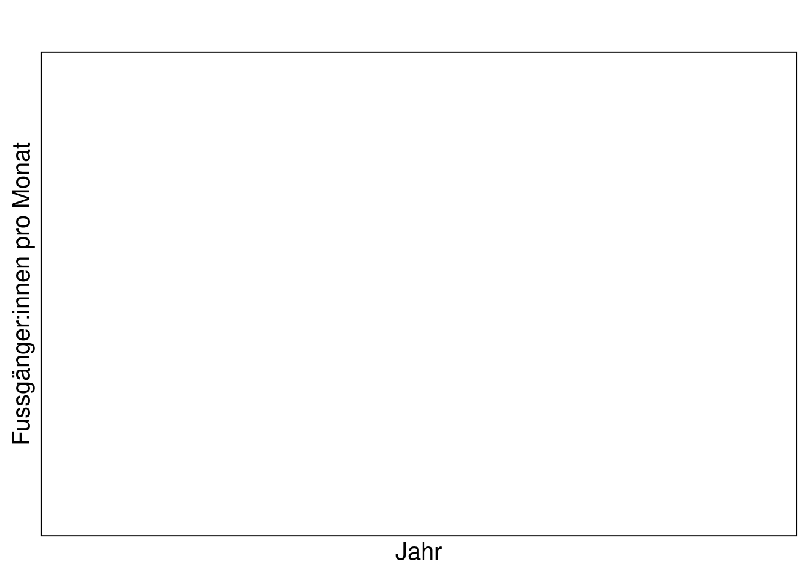
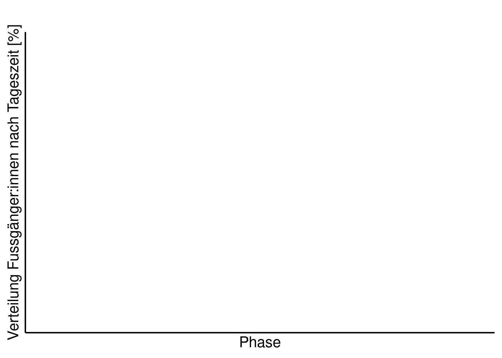

KW 43+44: Übung Deskriptiv
Aufgabe 1: Verlauf der Besuchszahlen / m
1a)
Nachdem wir die Projektstruktur aufgebaut haben und die Daten vorbereitet (inkl. aggregiert) sind, machen wir uns an die deskriptive Analyse. Dies macht eigentlich immer Sinn. Bevor mach sich an die schliessende Statistik macht, muss man ein “Gefühl” für die Daten bekommen. Dies funktioniert am einfachsten mit explorativen Analysen.
Wir interessieren uns in den Analysen für 5 Zeitabschnitte:
- von Anfang Untersuchungsperiode bis 1 Jahr vor Lockdown 1 (pre)
- 1 Jahr vor Corona (normal)
- Lockdown 1
- Lockdown 2
- Ende 2. Lockdown bis Ende Untersuchungsperiode
- Plottet den Verlauf der monatlichen Besuchszahlen an eurer Zählstelle. Auf der x-Achse steht dabei dabei Jahr und Monat (gespeichert im df depo_m), auf der y-Achse die monatlichen Besuchszahlen. Zeichnet auch die beiden Lockdown ein (Hinweis: rundet das Start- und Enddatum der Lockdowns auf den Monat, da im Plot die monatlichen Zahlen gezeigt werden).
Haltet euch dabei an untenstehenden Plot:
Hinweis: - Nutzt zum plotten ggplot() - folgende Codeschnipsel helfen euch:
ggplot(data = depo_m, mapping = aes(Ym, Total, group = 1))+ # group 1 braucht R, dass aus den Einzelpunkten ein Zusammenhang hergestellt wird
# zeichne Lockdown 1; ein einfaches Rechteck. bestimme mit min und max die Dimensionen
geom_rect(mapping = aes(xmin = ym("2020-3"), xmax = ym("2020-5"),
ymin = 0, ymax = max(Total+(Total/100*10))),# das Rechteck soll 10 % grösser als die maximale Besuchszahl sein
fill = "lightskyblue", alpha = 0.2, colour = NA)+
# zeichne Lockdown 2
...+
# zeichne die Linie
geom_line(...)+
theme_linedraw(base_size = 15)+
...- Exportiert euren Plot mit ggsave() nach results. Breite = 20, Höhe = 10, Einheiten = cm, dpi = 1000
1b)
Nachdem wir wissen, wie sich die Besuchszahlen allgemein entwickelt haben, untersuchen wir wie sich diese während den unterschiedlichen Tageszeiten entwickelten.
Wie benötigen dazu wieder denselben Datensatz, dieselben x- und y-Achsen. Allerdings ergänzen wir den area-plot mit dem “fill”-Argument:
Speichert auch diesen Plot.
ggplot(depo_m_daytime, aes(Ym, Total, fill = Tageszeit)) +
geom_area(position = "fill")+
...Aufgabe 2: Wochengang
Nachdem wir nun wissen, wie sich die Besuchszahlen während der Untersuchungsdauer monatlich entwickelt haben, möchten wir genauer untersuchen, wie sich die Zahlen je nach Phase (Pre, Normal, Lockdown 1, Lockdown 2 und Covid) auf die Wochentage verteilen.
2a)
- Berechnet die Totale Anzahl pro Wochentag pro Phase. Das brauchen wir nicht weiter für unsere Berechnungen, kann aber später ein nützliches Resultat für den Bericht sein.
mean_phase_wd <- depo_d %>%
group_by(...) %>%
...- Speichert das als .csv
write.csv(mean_phase_wd, "results/mean_phase_wd.csv")2b)
- Erstellt einen Boxplot nach untenstehender Vorgabe:

Hinweis: - Nutzt zum plotten ggplot() - folgende Codeschnipsel helfen euch:
ggplot(data = depo_d)+
geom_boxplot(mapping = aes(x= Wochentag, y = Total, fill = Phase))+
...- Exportiert auch diesen Plot mit ggsave(). Welche Breite und Höhe passt hier?
2c)
Sind die Unterschiede zwischen Werktag und Wochenende wirklich signifikant? Falls ja, in allen Phasen oder nur während bestimmter?
- Prüft das pro Phase mit einem einfachen t.test.
Aufgabe 3: Tagesgang
Vom Grossen zum Kleinen, von der Übersicht ins Detail. Jetzt widmen wir uns dem Tagesgang, das heisst der Verteilung der Besuchenden auf die 24 Tagesstunden je nach Phase.
3a)
- Berechnet zuerst den Mittelwert der Totalen Besuchszahlen pro Wochentag pro Stunde pro Phase. (ganz ähnlich wie unter 2a) und speichert das df unter Mean_h.
Vergewissert euch vor dem Plotten, dass der Datensatz im long-Format vorliegt.
3b)
- Plottet den Tagesgang, unterteilt nach den 7 Wochentagen nun für unsere 5 Phasen.
Error in `combine_vars()`:
! Faceting variables must have at least one valueHinweis: - Nutzt zum plotten ggplot() - folgende Codeschnipsel helfen euch:
ggplot(Mean_h, aes(x = Stunde, y = Total, colour = Wochentag, linetype = Wochentag))+
geom_line(size = 2)+
facet_grid(...)
...Aufgabe 4: Kennzahlen
Schliesslich berechnen wir noch einige Kennzahlen (Anzahl Passagen, Richtungsverteilung, …).
4a)
- Gruppiert nach Phase und Tageszeit und berechnet dieses mal die Summe (nicht den Durchschnitt) Total, IN und OUT (ähnlich wie in 2a und 3a).
- Nehmt dafür das vorbereitete df “depo_daytime”
- Speichert das das neu erstellte data.frame als .csv. Dieses .csv brauchen wir für keine weiteren Auswertungen, es enthällt für den Bericht aber nützliche Kennzahlen.
4b)
Die Zeitreihen der 5 Phasen unterscheiden sich deutlich voneinander. Totale Summen sind da kaum miteinander vergleichbar, besser eignet sich der Durchschnitt oder der Median.
- Gruppiert nach Phase und Tageszeit und berechnet den Durchschnitt Total, IN und OUT und speichert das df unter mean_phase_d.
- Ergänzt das mit der prozentualen Richtungsverteilung
mean_phase_d <- mean_phase_d %>%
mutate(Proz_IN = round(100/Total*IN, 1)) %>% # berechnen und auf eine Nachkommastelle runden
...4c)
Schliesslich soll das Ergebnis noch visualisiert werden.
- Erstellt einen Plot nach untenstehendem Beispiel und speichert ihn:
